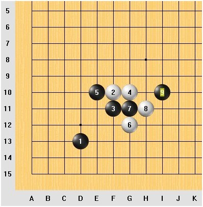
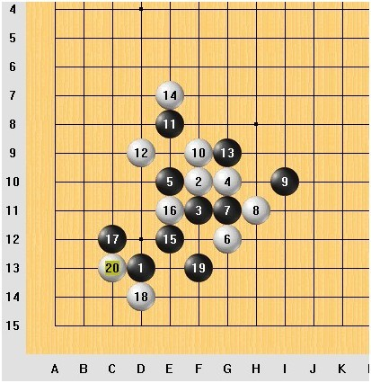

元旦冠军挑战赛之大圣十番棋，第一盘对局 棋评
首先介绍一下对局双方:
既然是挑战赛，就分守擂的，和挑战者
守擂的是：云中漫步，“元旦狂欢杯”的冠军，并于此后的长达一周的挑战中，
除一盘抢表失误外，余者全胜。包括车轮站独战三大高手并全部取胜。
慢棋网站ID：YZMB
挑战者是：大圣（杨文伟），知名网络高手，曾多次组织QQ五子棋一手交换擂台赛，并担任一台擂主，至今无败绩
慢棋网站ID： dasheng
本次对局是由大圣（杨文伟） 开局，云中漫步没有交换
因此这盘对局，由杨文伟执黑，云中漫步执白
实战总谱：
［此帖子已被 蓝天蓝 在 2013-3-17 8:27:38 编辑过］
黑1 D13开局，是比较常见的，也是一个大多数玩家觉得比较平衡
的一个点，
云中漫步，应了这个第2手，这个白2并不是出现率最高的第二手，比如在元旦狂欢杯，或者平时玩家，最常走的还是F11，那么，咱们先粗略看
这个第2手，它与别的第2手的区别
那我们先说说最常见的这个第2手，白2走F11，它的特点是靠近黑棋，
黑棋很容易贴过来，直接和白棋争抢外势
比如这样
接下来再来看看2走G10，离黑1 就比较远一点了，虽然自己站了外势，但是对于黑棋在角落这里的限制就相对弱了一些，黑棋就可以可以抓住机会在角落这里展开攻击，即使不能攻击取胜，也好消耗掉白棋的一些空间，黑棋再绕出去也不晚。
比如黑3可以走E11，黑棋下一步在角落里，可以连接的点，就不少，如：D11 、D12、E13、D10、甚至G13这里，我觉得都可以走走。在这个时候黑棋进攻过程中，白棋防守是有压力的。
现在呢在说说2走F1O,介于2者之间，既不近，也不远，黑棋就能仗着空间硬攻，不过，空间又比2走F11要大一些
这个情况下，黑棋可以选择的点比较多比如下面这些点都可以试试，如：E10 、E11 、F11、F9、G10
那现在可以先分析一下3走F11,白棋如果还是只顾着占取外势，黑棋将可以在角落这里取胜。比如：白4 走G8
黑棋这样一路攻击下来，到黑9这里就可以必胜了，这里就不演示了，大家可以自己拆解一下。并且，白4在8线上，都是必败的，这样大家就可以感觉到，这个黑3凌厉的攻势，所以，白棋是不敢贸然抢外势的，黑棋有很强烈的反击，即使白4走G9 黑棋走E10，也是很强, 黑3有很强的后继手段
［此帖子已被 蓝天蓝 在 2013-3-18 8:47:09 编辑过］
实战的白4，走在G10、看起来，是一个自然的应对 因为，黑棋有一个斜跳二, 白棋挡住，自己再形成一个横向的活二,想把黑棋控制在角落里
如果不看黑1，就看2、3、4这个棋型，相当于一个局部云月的棋型，
但是，由于距离边线的问题，以及黑1的问题，情况将大大地不同

这样按照云月的定式白棋是不能攻出来的。
如果白棋继续云月的局部胜法，走在I12，白棋是不能杀的
与中间有所不同，现在到边角开局的区域，有许多的分支，就会遇到边线问题，比如现在，就明显不可能取胜了
所以，白棋是不能去生硬进攻的，更不能去照搬中心开局的必胜的变化
如果那么走，局面将不堪设想。
实战之中，执白的云中漫步，明显对这个变化不是很熟悉
思考了一会之后在F9活三了，黑棋这时候，感觉是比较好走的。
白棋采取攻势，黑棋就防守，黑棋一边防守，一边取外势，到这里，白棋完全陷入了长考。
就现在这样的局面，我们分析一下，即使白棋在右边了攻击，也是不能取胜的，而且会被黑棋包围

［此帖子已被 蓝天蓝 在 2013-3-18 8:50:29 编辑过］
在自己没有攻击能力的情况下防守也是一种方法，很明显的黑棋右边这里可以连接的点很多，既然选择就首先考虑在左边这里防守了，针对9、11这个活二，
如果白棋12走在这个活二中间，就是E9这里，那黑棋堵外边，D9这里，对黑棋取到的防守作用感觉不大，因为这样白棋就被黑棋包围了，而且这样黑棋会形成一个活二，一个眠三，在左边这里的攻击能力很强
也许就因为这样白棋才选择防守一下，把12走在了D9，算是堵断一下黑棋的连接，算是半攻半防
黑棋也就随之防守一下白棋这个活二，而没有直接在E9活三，而是走在了G9,这步棋感觉很强，因为它既防守了白棋的唯一的一个活二，同时也限制了2 的斜线往外扩展的可能，可以在H10这里和7连接，形成2个活二，之后还可以活三跟1和9连接，另外还可以在I9这里跟9连接形成2个活二，同时进一步把白棋包围在里面，也保留了自己的活二，还可以跟E7这里活三点取的连接。这样外围也尽是黑棋的空间了。我就可以随意防在最有利最得外势的位置
黑棋在上面和右边，都有棋
13之后，以为白14会走H8，根据前面对黑棋的分析，多少有牵制作用
或者直接走5和11的中间，虽然这样感觉和12有点重复防守的作用，但是这样也有把黑棋上下分割开来的作用
但是，白棋的下一手，出乎我的意料
白14走在E7了
那我们分析一下这个实战的14
白棋应该是认为，无论如何，要给自己留一些藏招点，或者说，留下资源，因为，你要有进攻的威胁，对方才不能欺人太甚，但是，话说回来，有得就有失，
有的时候，采取这种思路，是有风险的，现在这个局面就是最好的例子，白棋确实在上方给自己留下了资源，也限制了黑棋在上方的发展，而且下一步在C9这里有一个很好的连接点，还可以在F6这里跟F线的白棋连接，争取上面的发展空间，进而还可以在H7这样的位置走一手，争取到上方的空间，有种把黑棋压在下面的感觉，
［此帖子已被 蓝天蓝 在 2013-3-18 8:56:18 编辑过］
但是，这样走也在下方给黑棋留下了空间，现在，在左下角，全是黑棋的子力， 实战黑棋并没有舍弃左下方的空间，去右上方发展，而是把15走在了E12。
那我们接着分析一下这个15 ，首先这个15 形成了2个眠三，E线的11、5、15、和斜线的3、15、1，这个时候把黑1也利用了真的难得的，而且黑棋E线的11、5、15这个眠三是一种异形三，这种异形三，很有趣，它可以先冲一步，E11，再在E13，可以连续这样冲四，而且在E12冲四之后，把12线的眠二也变成了眠三，又多了一次冲四的机会，就是在D11这里，D11这里冲四之后，又跟15形成一个活二，再结合E13这里的冲四点，就又多了一个33点，也就是F13这里，进而黑棋就可以取胜了，对于这样通过2级连续攻击的取胜招法，我们管它叫藏招，也就是说这个15是一个藏招。
现在我们用图摆一下，直观的看看黑棋的这个攻击路线。
有了这个16，如果在这样走就被反冲四了，所以，16走C9这手跳手，是很好的棋，但是虽然白棋这手棋很好，也没有防守住黑棋的攻击，因为白棋反4 之后，黑棋防守的同时在D11这里形成了一个43点，白棋还是必须防守一下，这里黑棋在下面还是可以取胜了，所以这个16 并不行
当然如果不给白棋这样反4的机会，黑棋还可以在E13这里活三，这样走
黑棋简单取胜，

22防守右边，就不用演示了。
［此帖子已被 蓝天蓝 在 2013-3-18 9:01:33 编辑过］
17之后，白18如果先冲四冲
黑棋挡住之后，形成一个含招:E11，D11
接下来，还是无法防守，所以，这个16是不成立的
那么16直接防守黑棋竖线和横线都可以利用到的E11是比较强的防守了
现在，进入了本局的最关键阶段，如果是你，你的思路会是什么？
是进攻，还是防守蓄势？
如果要防守呢，左下角有一些空间，不用可惜，
如果在左下角进攻，一旦攻不下来，对方可能就是很多外势，
言归正传，有没有想在左下进攻的？
实战走在了C12
黑棋选择了局部进攻，子力密集，于是在眠三附近形成2个活二，1个眠二，子力密集的进攻方式感觉有点骗的方式，之所以感觉有骗的方式是觉得左边这里的空间不是很大，黑棋攻击取胜的机会不大，可是呢，实战证明黑棋确实可以在左边角落这里结合右边取胜了。
那现在我们进一步分析一下这个17 之后的攻击路线。
有了这个17之后首先可以通过1、15、3这个眠三在C14冲四，和17 在C线连接形成活二，然后在C13这里活三，这样又可以在13线跟黑1连接形成活二，接下来就可以在B13这里活三，又可以和5、17的斜线形成一个眠三，再结合原有的15、17这个活二在D12活三，跟D线的黑1取得连接，同时在D11形成一个43点，这样黑棋就可以取胜了。
有了上面的分析，我们很自然的会选择防守黑棋的一个攻击的路线
比如这个18 ，防守了黑棋12这条横线的活二
不过这个18呢，防守不住黑棋的取胜
黑棋可以这样取胜

在14线上，两步三三，就不演示了
看到前面黑棋的取胜路线，白棋就想如果我防守E14这里，黑23 如果还是这样活三，我就可以反4了

黑棋有两套两步三三的线路，这里也不演示了，自己可以拆解一下
［此帖子已被 蓝天蓝 在 2013-3-18 9:06:04 编辑过］
还有就是直接防守黑棋的冲四点，C14
针对这个白18，黑棋就不能按照之前的那个攻击路线攻击了，要改变一下了
黑棋可以这样攻击取胜
具体怎么取胜的就不演示了，有兴趣的可以自己拆解一下。
接下来我们分析一下实战，实战18走在了D14
这个18 之后，黑棋没有直接活三攻击，而是在F13这里做了一步棋
那现在我们分析一下这个19的用途
首先这个19 形成了2个活二，1、19和19、15，15 、19 这个活二在上面活三，还可以跟5、17这个眠二形成眠三，另外1、19 这个活二，活三之后还可以跟15、17 这个活二的活三点连接形成新的活二，接下来还可以在F14这里继续活三，跟F线的眠二连接形成眠三，这样就可以跟I线的黑9 连接取胜
如果白棋防守下面，黑棋取胜就更加简单了

通过刚才的演示知道C13这里很关键，实战白棋也是防守了这里
这个时候黑棋采用活三的手段
我们先看看防守下面，黑棋怎么取胜的
白棋防守下面，黑棋在左边这个角落里取胜很容易，黑棋在B11活三，白棋虽然可以在E14这里反活三，但是黑棋在左边这里有一级连攻胜
有人也许会说，24先在D12冲四呢，黑棋这里的取胜路线就不行了吧
其实先冲四，还是不能防住黑棋取胜的，因为你白棋冲四的同时，黑棋防守冲四之后，又形成一个新的取胜路线，就是43

这样之后，白棋同样防守不住了，所以防守上面是强防
黑棋看到白棋防守上面了，如果只在角落这里是不能取胜了，就在右边这里发展
这样之后，白棋算了一下，无防了，就认输了。
［此帖子已被 蓝天蓝 在 2013-3-18 9:16:02 编辑过］
楼主编辑很辛苦啊~超长棋评~但是百度图片都看不到
 好长好长
好长好长引用：嫌长了 啊
原文由 小小亦默 发表于 2013-3-17 20:29:22 :

引用：刚刚整理了一下，现在应该可以看到图片了吧
原文由 夏至 发表于 2013-3-17 12:03:22 :楼主编辑很辛苦啊~超长棋评~但是百度图片都看不到
顶一个，看了之后很长见识！